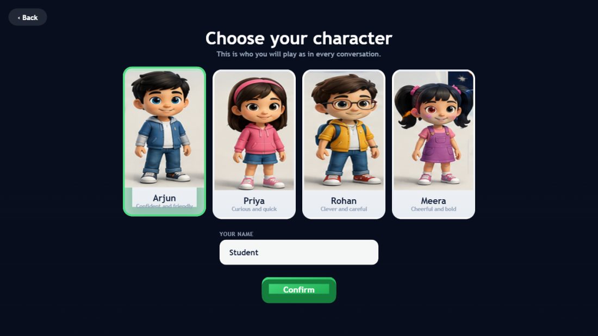
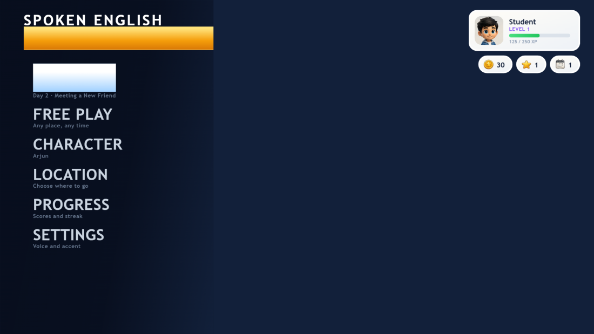
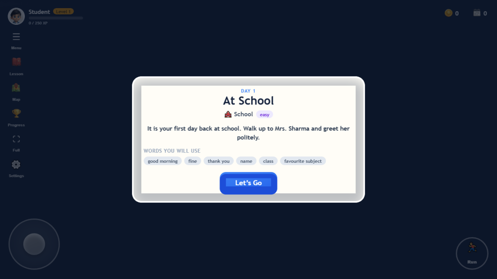
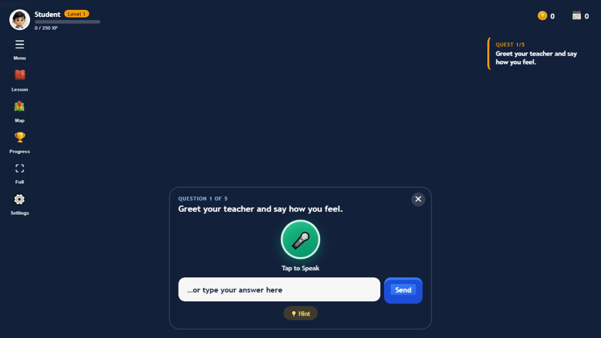
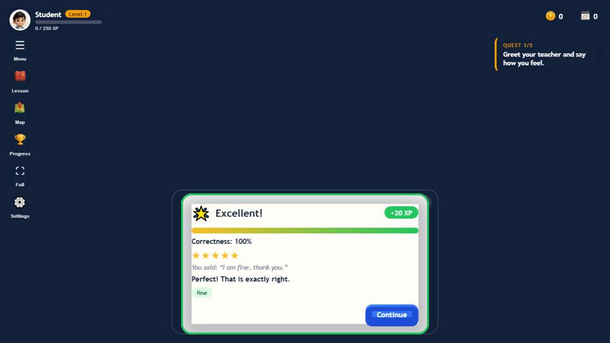
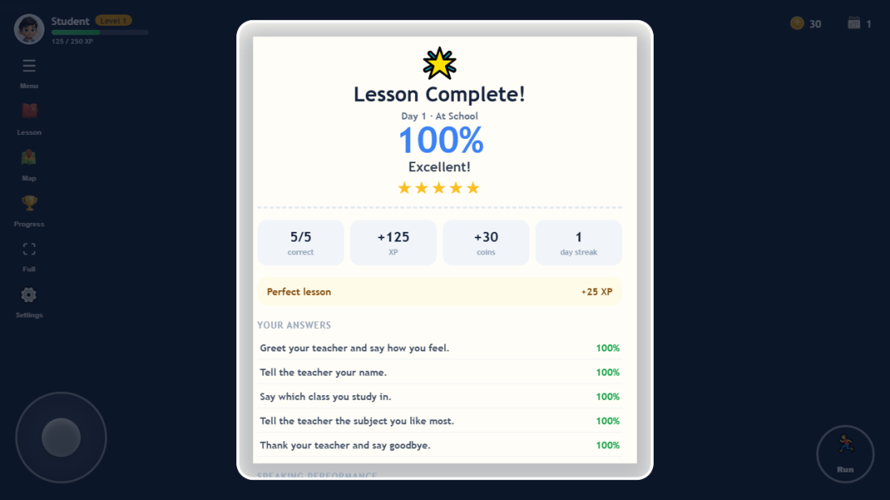
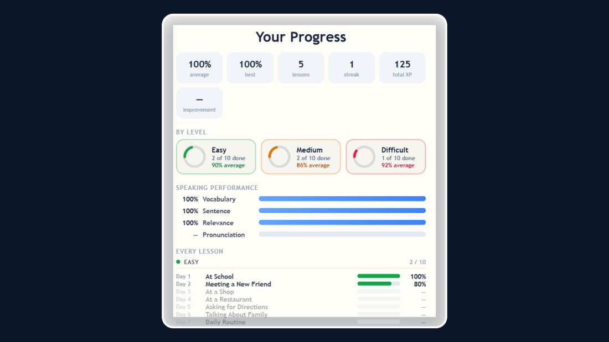
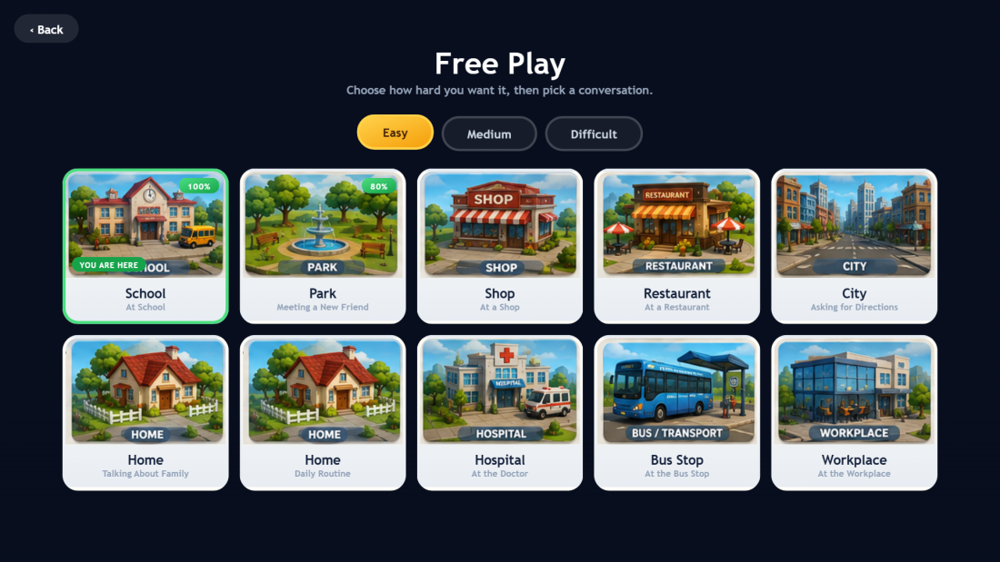

Spoken English Adventure is a 3D game where you walk up to a character, have a short conversation with them, and get scored on what you say — spoken or typed. A new conversation unlocks every day.
Pick your character
The first time you open the game, choose who you'll play as and type your name. This is just your avatar — it doesn't change the lessons or the scoring.

Find your way around
The main menu is your home base. Play jumps straight into today's lesson. The icons on the left (Menu, Lesson, Map, Progress, Full, Settings) stay on screen while you're walking around, so you can always get back here.

Read the day's brief, then walk over
Every lesson opens with a short brief: who you're talking to, where, and the words you'll need. Press Let's Go, then walk your character toward the marker — WASD or arrow keys on a keyboard, or the thumbstick in the bottom-left corner on a touchscreen.

Speak your answer, or type it
The character asks you something. Tap the microphone and say your answer out loud, or just type it in the box below and press Send. Both count the same — typing is always there as a backup if speech recognition isn't available in your browser.

See how you did, right away
Every answer is scored the moment you send it — no waiting until the end. You'll see a correctness percentage, stars, and a short note on what was good or missing. A weak answer sometimes offers a retry, and only your best attempt counts.

Finish the conversation
Once all the questions are answered, you get a full result: your overall score, XP, coins, your day streak, and a breakdown of every answer you gave. A perfect conversation earns a bonus.

Track your progress
The Progress screen shows your average and best scores, your streak, and how you're doing across Easy, Medium and Difficult separately — plus a running record of every conversation you've had.
Practise anytime
Free Play lets you replay any conversation you've already unlocked, at any difficulty. It's the place to go back and improve a score without touching today's lesson or your streak.

